Representations from 350+ image, video, and language models predict human ratings and fMRI responses to 3-second social videos.
00Overview
Vision models are great models of how we recognize objects and scenes — but real vision is dynamic and social. Benchmarking 350+ models on social videos reveals a major gap: no model class matches human social vision, and each fails in a different way.
350+
image, video & language models
3
model modalities compared head-to-head
fMRI
+ behavioral ratings as benchmarks
Most evidence that deep networks are good models of human vision comes from static images of objects and scenes. We present a dataset of
natural videos and captions of multi-agent interactions and benchmark models on behavioral and neural responses. As in prior work, many vision models
reach the noise ceiling for visual scene features and the ventral stream. But image models poorly predict action and social-interaction
ratings and responses in the lateral stream, a pathway increasingly thought to specialize in dynamic, social vision.
01Who wins where?
Each model family has a different profile. Pick one:
Image models reach the noise ceiling for visual scene features and ventral-stream responses, and top each visuospatial rating (spatial expanse, interagent distance, agents facing). But they poorly predict action and social-interaction ratings and lateral-stream responses. Architecture (convolutional vs. transformer) and objective (supervised vs. self-supervised) make little difference.
Video models dramatically outperform image models in mid-level lateral regions — MT, EBA, and LOC (ps < 0.001). In early visual cortex and high-level lateral regions (pSTS, aSTS) the gain is moderate and not significant (ps > 0.05).
Language models, given human sentence captions, predict action and social ratings better than image or video models — but still perform poorly at predicting lateral-stream neural responses.
Benchmark
Image
Video
Language
Visuospatial ratings
top model per rating
similar on average
similar on average
Action & social ratings
poor
below language
best
Ventral stream
many models near ceiling
many models near ceiling
—
Lateral mid-level (MT, EBA, LOC)
poor
best (p < 0.001)
poor
02Results
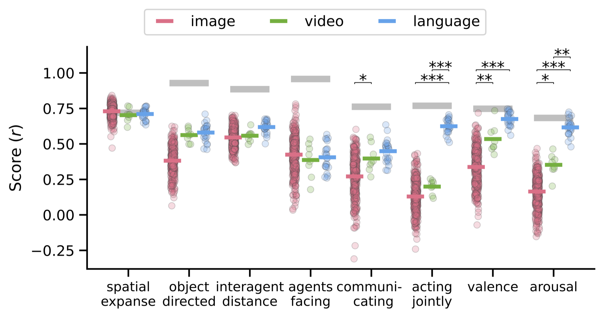
Behavioral ratings. Average performance of image, video, and language models on each rating. More image models were tested, so the single best model is biased toward images; for visuospatial ratings no class is better on average (p > 0.05).
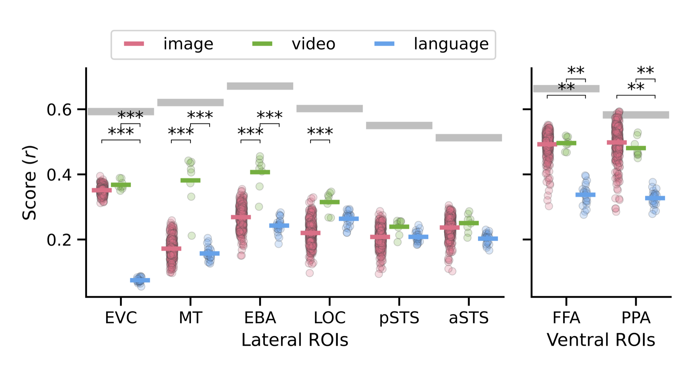
Neural responses by ROI. Video models dramatically outperform image models in MT, EBA, and LOC (ps < 0.001); differences in EVC, pSTS, and aSTS are not significant.
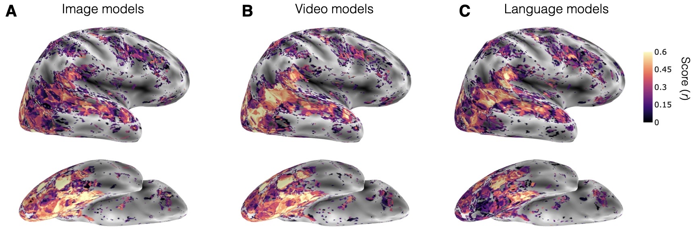
Test-set encoding performance. Best-layer performance per voxel for (A) image, (B) video, and (C) language models on the lateral and ventral surface of one participant.
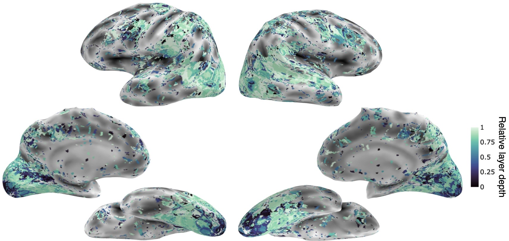
Whole-brain hierarchical alignment. Relative depth of the best-performing layer across vision models.
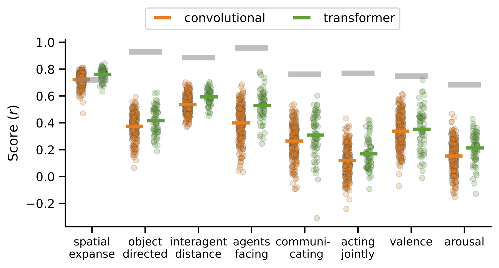
Architecture and training. Within image models, convolutional vs. transformer and supervised vs. self-supervised make no notable difference.
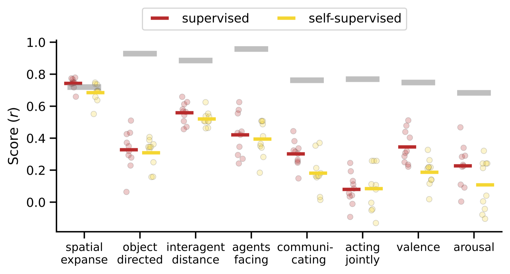
Learning objective (ResNet-50 models). Supervised vs. self-supervised on behavioral ratings; gray bars show the noise ceiling.
03What language models rely on
We selectively perturbed the sentence captions to test which parts of a description drive alignment with behavior and the brain.
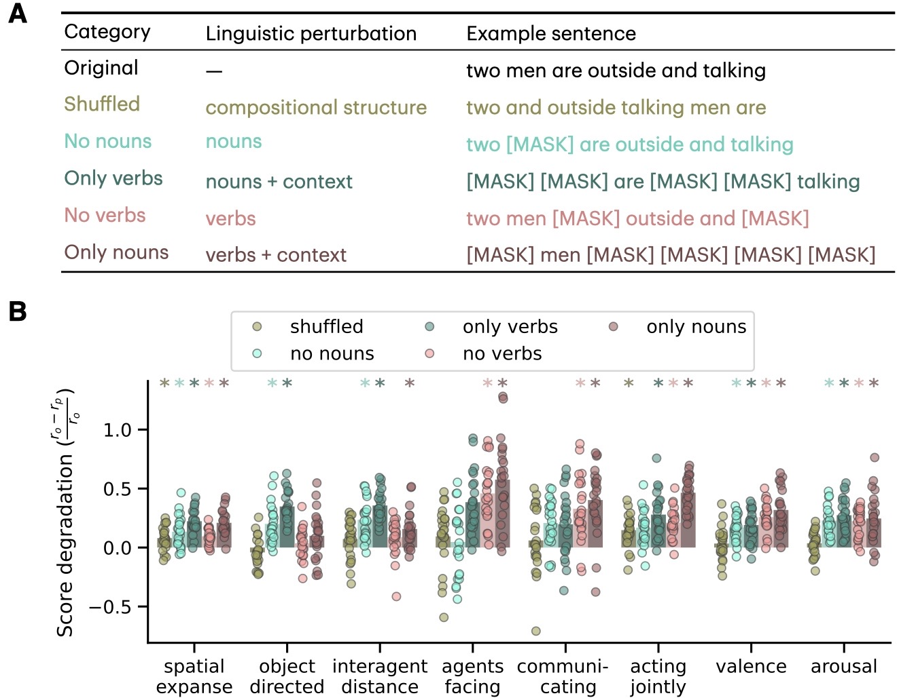
(A) Example perturbations. (B) Each language model's performance on behavioral ratings after perturbation; asterisks mark significant degradation relative to the unperturbed sentence.
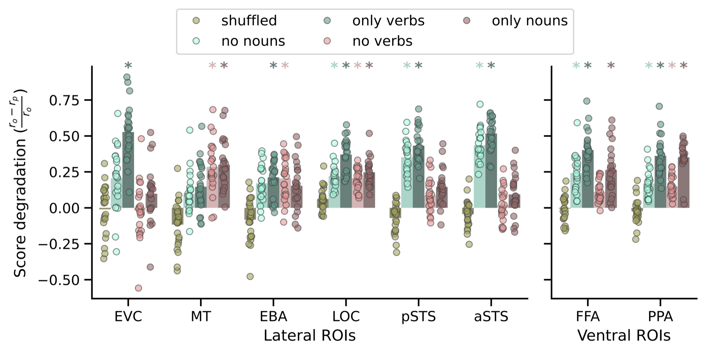
Neural alignment after perturbation. Average ROI performance of each language model; asterisks mark significant degradation.
04Hierarchy, architecture & objective across ROIs
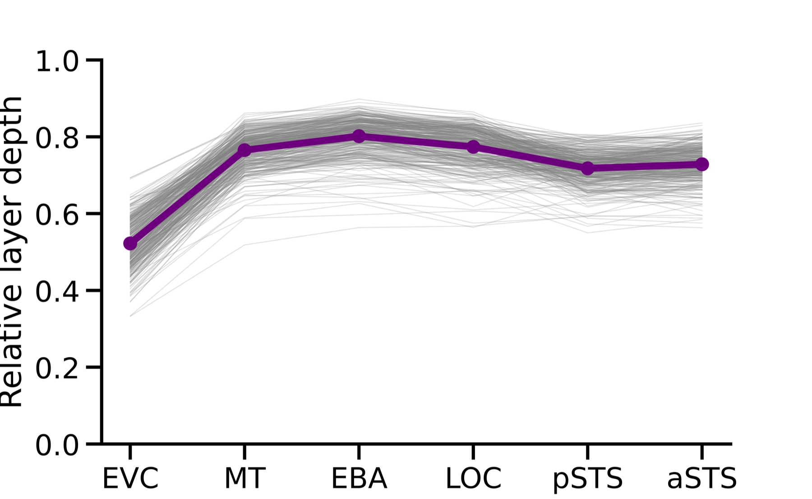
Hierarchical alignment. Relative depth (0 = input, 1 = output) of each model's best layer per lateral ROI, suggesting a lack of hierarchical alignment in lateral regions.
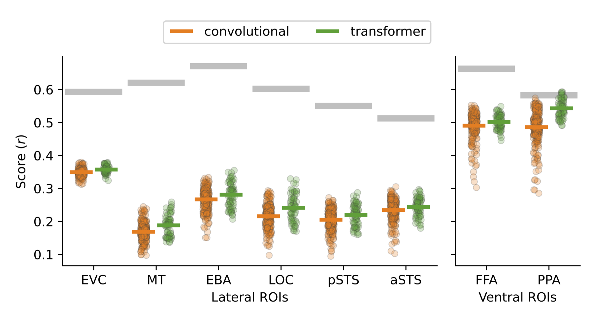
Architecture across ROIs. Convolutional and transformer models perform similarly in both ventral and lateral ROIs.
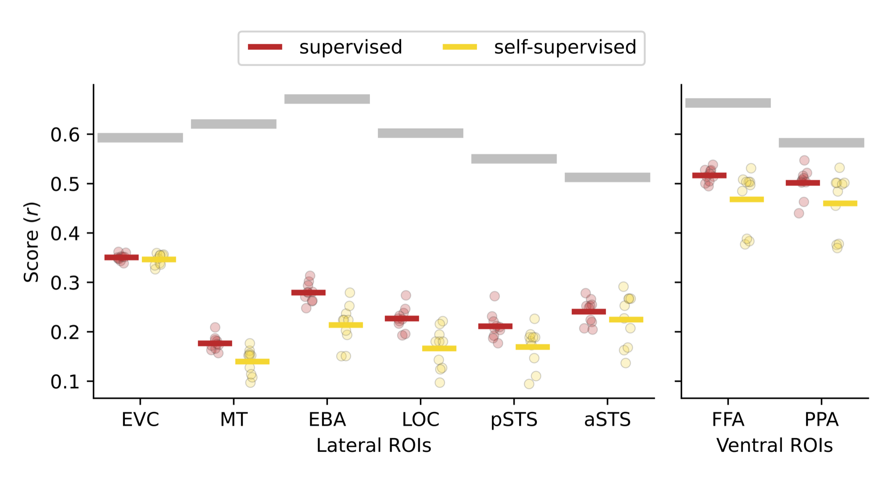
Learning objective across ROIs. Supervised vs. self-supervised training.
05Takeaways
A major gap. All model classes fall short of human responses to dynamic social scenes.
Brain ≠ behavior. Language models best predict human behavioral ratings, while video models best predict lateral brain regions.
Study vision in motion. These results highlight the importance of studying vision in dynamic, natural contexts.
@inproceedings{garcia2025modeling,
title = {Modeling Dynamic Social Vision Highlights Gaps Between
Deep Learning and Humans},
author = {Garcia, Kathy and McMahon, Emalie and Conwell, Colin
and Bonner, Michael F. and Isik, Leyla},
booktitle = {International Conference on Learning Representations (ICLR)},
year = {2025},
url = {https://openreview.net/forum?id=wAXsx2MYgV}
}